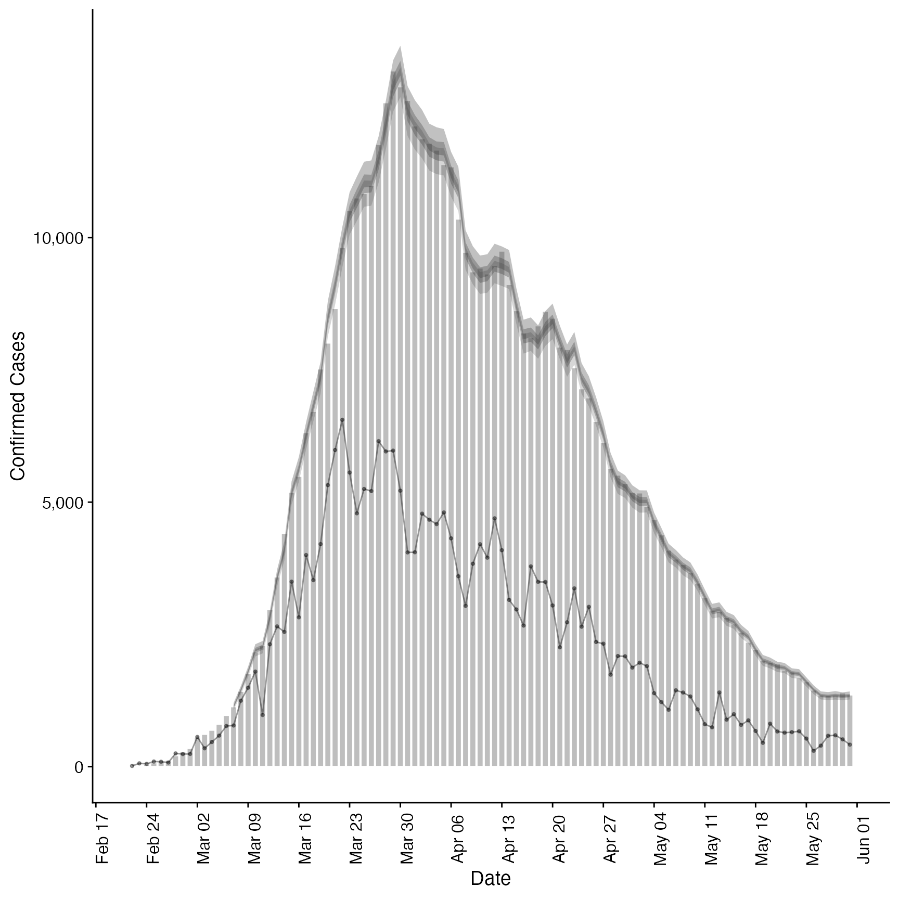

Estimate a Secondary Observation from a Primary Observation
Source:R/estimate_secondary.R
estimate_secondary.Rd Estimates the relationship between a primary and secondary observation, for
example hospital admissions and deaths or hospital admissions and bed
occupancy. See
Estimates the relationship between a primary and secondary observation, for
example hospital admissions and deaths or hospital admissions and bed
occupancy. See secondary_opts() for model structure options. See parameter
documentation for model defaults and options. See the examples for case studies
using synthetic data and here
for an example of forecasting Covid-19 deaths from Covid-19 cases. See
here for a prototype function that
may be used to estimate and forecast a secondary observation from a primary across multiple regions and
here
for an application forecasting Covid-19 deaths in Germany and Poland.
estimate_secondary( reports, secondary = secondary_opts(), delays = delay_opts(list(mean = 2.5, mean_sd = 0.5, sd = 0.47, sd_sd = 0.25, max = 30)), truncation = trunc_opts(), obs = obs_opts(), burn_in = 14, CrIs = c(0.2, 0.5, 0.9), model = NULL, verbose = interactive(), ... )
Arguments
| reports | A data frame containing the |
|---|---|
| secondary | A call to |
| delays | A call to |
| truncation |
|
| obs | A list of options as generated by |
| burn_in | Integer, defaults to 14 days. The number of data points to use for estimation but not to fit to at the beginning of the time series. This must be less than the number of observations. |
| CrIs | Numeric vector of credible intervals to calculate. |
| model | A compiled stan model to override the default model. May be useful for package developers or those developing extensions. |
| verbose | Logical, should model fitting progress be returned. Defaults to
|
| ... | Additional parameters to pass to |
Value
A list containing: predictions (a data frame ordered by date with the primary,
and secondary observations, and a summary of the model estimated secondary observations),
data (a list of data used to fit the model), and fit (the stanfit object).
Examples
# \donttest{ #set number of cores to use options(mc.cores = ifelse(interactive(), 4, 1)) #' # load data.table for manipulation library(data.table) # load lubridate for dates library(lubridate)#> #>#> #> #> #>#> #> #>#### Incidence data example #### # make some example secondary incidence data cases <- example_confirmed cases <- as.data.table(cases) # apply a convolution of a log normal to a vector of observations weight_cmf <- function(x, ...) { set.seed(x[1]) meanlog <- rnorm(1, 1.6, 0.2) sdlog <- rnorm(1, 0.8, 0.1) cmf <- cumsum(dlnorm(1:length(x), meanlog, sdlog)) - cumsum(dlnorm(0:(length(x) - 1), meanlog, sdlog)) conv <- sum(x * rev(cmf), na.rm = TRUE) conv <- round(conv, 0) return(conv) } # roll over observed cases to produce a convolution cases <- cases[, .(date, primary = confirm, secondary = confirm)] cases <- cases[, secondary := frollapply(secondary, 15, weight_cmf, align = "right")] cases <- cases[!is.na(secondary)] # add a day of the week effect and scale secondary observations at 40% of primary cases <- cases[lubridate::wday(date) == 1, secondary := round(0.5 * secondary, 0)] cases <- cases[, secondary := round(secondary * rnorm(.N, 0.4, 0.025), 0)] cases <- cases[secondary < 0, secondary := 0] # fit model to example data assuming only a given fraction of primary observations # become secondary observations inc <- estimate_secondary(cases[1:60], obs = obs_opts(scale = list(mean = 0.2, sd = 0.2))) plot(inc, primary = TRUE)# forecast future secondary cases from primary inc_preds <- forecast_secondary(inc, cases[61:.N][, value := primary]) plot(inc_preds, new_obs = cases, from = "2020-05-01")#### Prevalence data example #### # make some example prevalence data cases <- example_confirmed cases <- as.data.table(cases) cases <- cases[, .(date, primary = confirm, scaled_primary = confirm * rnorm(.N, 0.4, 0.05))] cases$secondary <- 0 cases$secondary[1] <- as.integer(cases$scaled_primary[1]) for (i in 2:nrow(cases)) { meanlog <- rnorm(1, 1.6, 0.1) sdlog <- rnorm(1, 0.8, 0.05) cmf <- cumsum(dlnorm(1:min(i-1,40), meanlog, sdlog)) - cumsum(dlnorm(0:min(39,i-2), meanlog, sdlog)) reducing_cases <- sum(cases$scaled_primary[(i-1):max(1,i-20)] * cmf) reducing_cases <- ifelse(cases$secondary[i - 1] < reducing_cases, cases$secondary[i - 1], reducing_cases) cases$secondary[i] <- as.integer( cases$secondary[i - 1] + cases$scaled_primary[i] - reducing_cases ) cases$secondary[i] <- ifelse(cases$secondary[i] < 0, 0, cases$secondary[i]) } # fit model to example prevalence data prev <- estimate_secondary(cases[1:100], secondary = secondary_opts(type = "prevalence"), obs = obs_opts(week_effect = FALSE, scale = list(mean = 0.3, sd = 0.1))) plot(prev, primary = TRUE)# forecast future secondary cases from primary prev_preds <- forecast_secondary(prev, cases[101:.N][, value := primary]) plot(prev_preds, new_obs = cases, from = "2020-06-01")# }